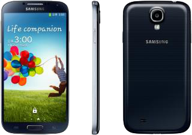

삼성 갤럭시 S4
1. 외관

삼성전자가 2013년 3월과 9월, IFA 2013에서 각각 공개한 안드로이드 스마트폰.
2. 사양
| 프로세서 |
삼성 엑시노스 5410 SoC. ARM big.LITTLE↓, PowerVR SGX544 MP3 533 MHz GPU ARM Cortex-A15 MP4 1.6 GHz + ARM Cortex-A7 MP4 1.2 GHz CPU |
||
| 메모리 | 2 GB LPDDR3 SDRAM, 16 / 32 GB 내장 메모리, micro SDXC 및 exFAT (최대 64 GB 지원) | ||
| 디스플레이 |
4.99인치 FHD(1920 x 1080) 다이아몬드 형태 RG-BG 펜타일 서브픽셀 방식의 삼성D Full-HD Super AMOLED (441 ppi) 멀티터치 지원 정전식 터치 스크린 with 슈퍼 센서티브 터치, 고릴라 글래스 3 |
||
| 네트워크 | 기본 | HSPA+ 42Mbps, HSDPA & HSUPA & UMTS, GSM & EDGE |
GSM & EDGE Wi-Fi 802.11a/b/g/n, 블루투스 4.0+LE |
| CM | LTE-2CA Cat.4 | ||
| 카메라 | 전면 200만 화소, 후면 1,300만 화소 AF 및 LED 플래시 | ||
| 배터리 | Li-ion 2600 mAh 착탈식 | ||
| 운영체제 | 안드로이드 4.2 → 4.3 (Jelly Bean) → 4.4 (KitKat) | ||
| 규격 | 69.8 x 136.6 x 7.9 mm | ||
3. 상세
2010년 갤럭시 S를 시작으로, 매해 상반기에 공개된 삼성전자의 안드로이드 플래그쉽 스마트폰 시리즈인 갤럭시 S 시리즈의 2013년도형 모델이자 네 번째 모델이다.
정식 발매명은 갤럭시 S4로 정해지면서, 갤럭시 S 시리즈 중 최초로 로마 숫자가 아닌 아라비아 숫자를 사용한다.